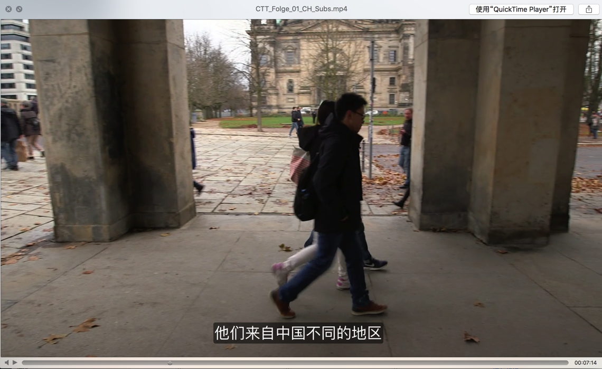

指定字幕文字属性
此处介绍嵌入字幕时，指定字幕文字的各种属性，比如字体大小、字体类型、颜色、透明度等
- srt字幕：加force_style参数
ffmpeg -i video.mp4 -vf "subtitles=subs.srt:force_style='Fontsize=24,PrimaryColour=&H0000ff&'" -c:a copy output.mp4 - ass字幕：在ass字幕中设置参数
Fontname, Fontsize, PrimaryColour, SecondaryColour, OutlineColour, BackColour, Bold, Italic, Underline, StrikeOut, ScaleX, ScaleY, Spacing, Angle, BorderStyle, Outline, Shadow
具体设置成什么值，以及效果如何，可借助于软件Aegisub去设置和预览
举例1
Style: Transparent,PingFang SC,20,&H00FFFFFF,&H000000FF,&HBC5E5E5E,&H8B000000,0,0,0,0,100,100,0,0,3,0,1,2,10,10,10,134
实现了字幕效果：
- 字体：PingFang SC
- 字体大小：20
- 字幕的背景半透明效果：后面很多参数组合的效果
如图：

举例2：ass设置半透明的背景
Style: Default,Arial,16,&H00FFFFFF,&H000000FF,&H80000000,&H80000000,-1,0,0,0,100,100,0,0,4,0,0,2,10,10,10,1
即可达到要的字幕有个半透明的背景色了。
其中16指的是字体大小，可以根据需要更改为自己要的值。